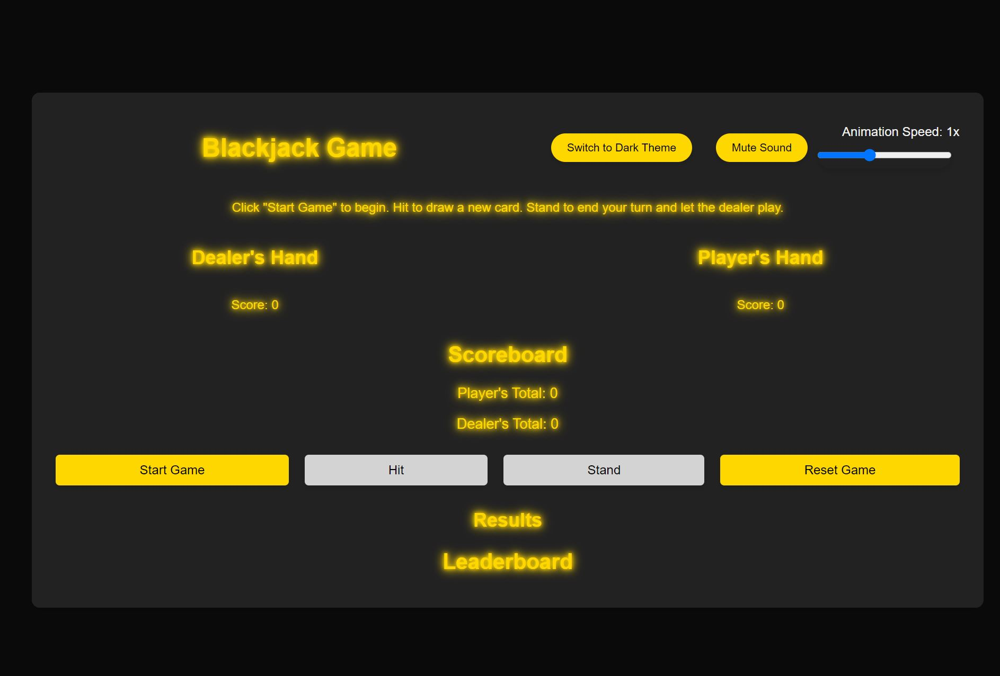
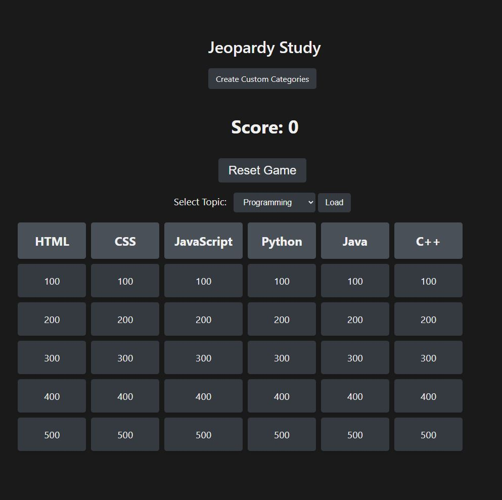
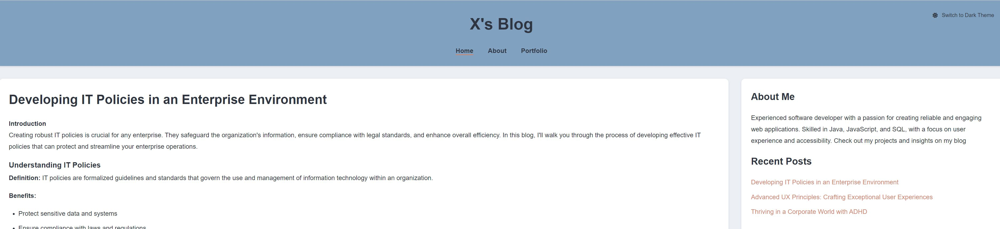
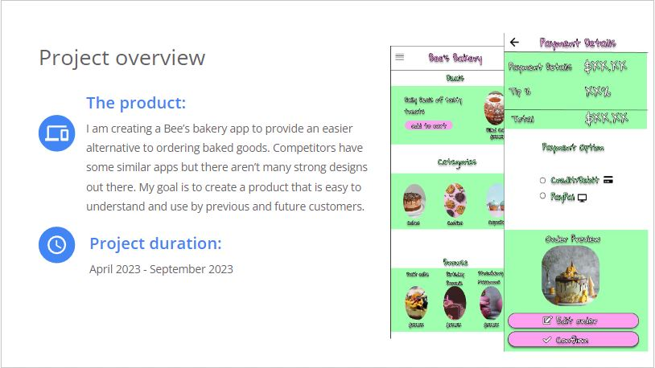
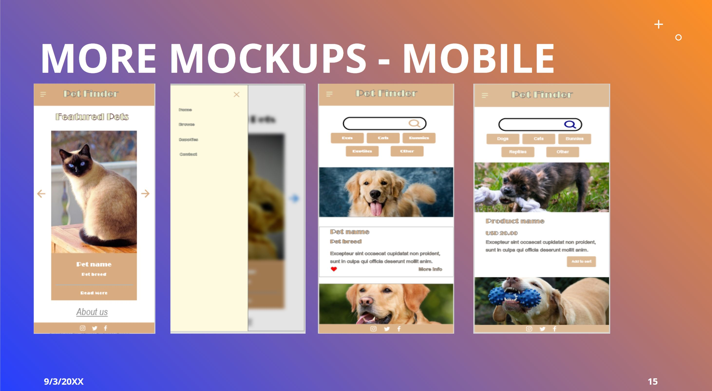

Software Support & Troubleshooting
Experience diagnosing technical issues, supporting users, and improving reliability in business environments.
Software Developer · QA-minded Builder · SQL & Automation Focused
I bring experience across software support, development, QA, and user-focused design. My strength is turning messy problems into reliable tools, cleaner workflows, and better experiences.
About
I’m Xavier Denson, a software development professional with a Bachelor of Science in Software Development and a Google UX Design Certificate. My background spans software support, QA, development, and database work, which helps me understand both the technical side of systems and the people using them.
In my current work, I support business-critical software, automate reporting, work with SQL Server data, and troubleshoot issues efficiently. I enjoy building tools that save time, reduce friction, and make systems easier to use.
I’m especially valuable in roles where debugging, collaboration, data work, and practical software delivery all matter.
Experience highlights
Experience diagnosing technical issues, supporting users, and improving reliability in business environments.
Built solutions with JavaScript, Python, and SQL to improve workflows, reporting, and usability.
Background in software quality assurance with attention to edge cases, testing, and overall user experience.
Able to bridge technical implementation with business needs, documentation, and support conversations.
Featured projects
These projects highlight my front-end development, API integration, interactivity, and usability thinking. I’m also expanding this portfolio with more SQL, automation, and testing-focused work.

An interactive browser-based Blackjack project focused on gameplay logic, state handling, and polished user interaction.

A study application inspired by quiz-game interactions, built to make learning more engaging and structured.

A personal blog project built to publish content and practice clean structure, presentation, and front-end organization.

A UX-focused concept centered on creating a smoother bakery ordering experience with intuitive flows and clear visual hierarchy.

A concept project designed to help connect potential pet owners with animals in need of homes through clearer browsing and discovery.
Skills
JavaScript, Python, Java, SQL, HTML, CSS
QA, troubleshooting, debugging, user support, documentation
SQL Server, MySQL, Postman, Docker, Jira
Agile, UX thinking, process improvement, accessibility-minded development